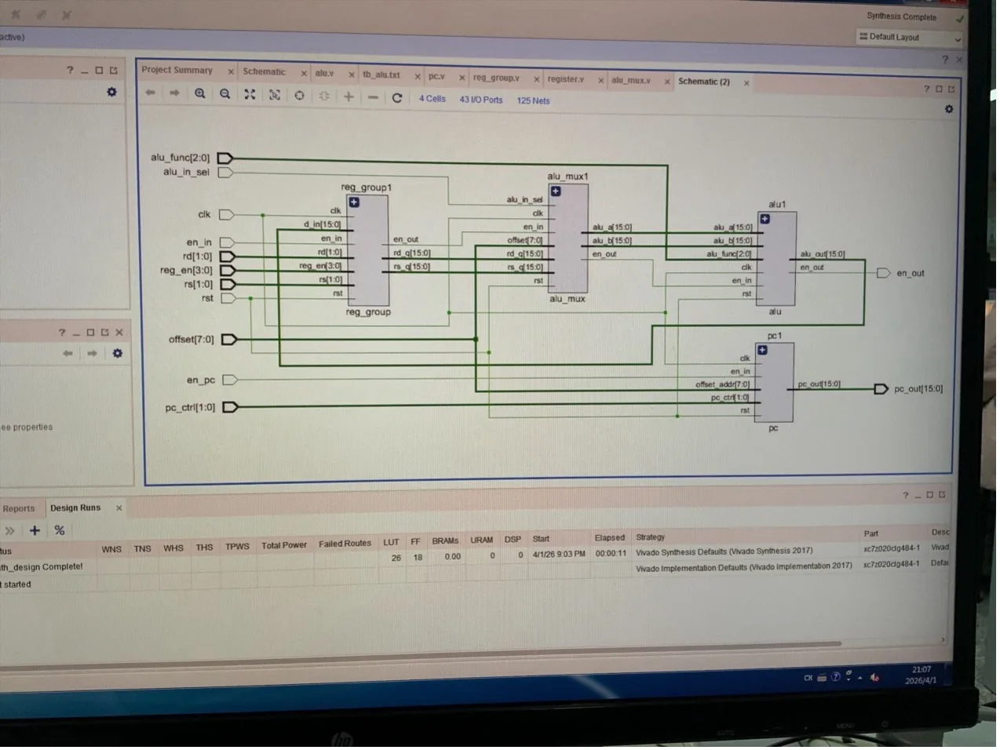

The design
The processor has four 16-bit registers and a datapath made of a register file, an operand multiplexer, a seven-operation ALU and a program counter. A multi-cycle control unit steps each instruction through Fetch, Decode, Execute and Write back, and a handshake from the ALU holds Execute until the result is ready.
The course supplied the module framework and, from Lab 4 on, a completed control unit. My parts of the submitted design were the ALU's operations, completing the AND and OR branches of the control FSM, the system testbench and an 11-instruction test program in ROM, plus the design report. I simulated it in Vivado and ran its modules on an FPGA board.

Reviewing it after the course
In November 2026, with help from an AI assistant, I rebuilt the submitted design from my report, re-simulated it and went through it line by line. It reproduced my report's results exactly, and it also had problems:
- The test program couldn't catch ALU bugs. Most operands were zero, AND never ran and results were checked by eye.
- Three instructions in the course's own instruction set (move between registers, add between registers, AND with an immediate) had no decode case, so the control FSM got stuck in Decode.
- No instruction selected the two shift operations, so the processor could only use five of the ALU's seven.
- My report misread ADD: opcode 0010 is add-immediate by design, and the program added an immediate of zero.
- The testbench released reset exactly on a rising clock edge, a race that can skip the first instruction.
- Synthesis inferred three latches: one in the control unit and two in the register file.
- My report said the test program exercised every implemented opcode, but AND and the shifts never ran.
The revised version
- Every documented instruction is decoded, plus new shift-left and shift-right instructions. An unknown opcode is treated as a no-op instead of hanging the processor.
- No latches: every control output has a default, and the register file's read ports are a plain multiplexer.
- A self-checking testbench runs a 15-instruction program against a reference model and checks the fetched instruction and all four registers after every instruction. It fails if any opcode never runs or if the control unit hangs.
- GitHub Actions runs the testbench on every push.
| Injected bug | Original test | New testbench |
|---|---|---|
| ADD computes OR | Missed | Caught |
| ADD computes XOR | Missed | Caught |
| SUB swaps its operands | Caught | Caught |
| AND computes OR | Missed | Caught |
| OR computes XOR | Missed | Caught |
| Shift left goes right | Missed | Caught |
| Shift right goes left | Missed | Caught |
| MOV passes A instead of B | Caught | Caught |